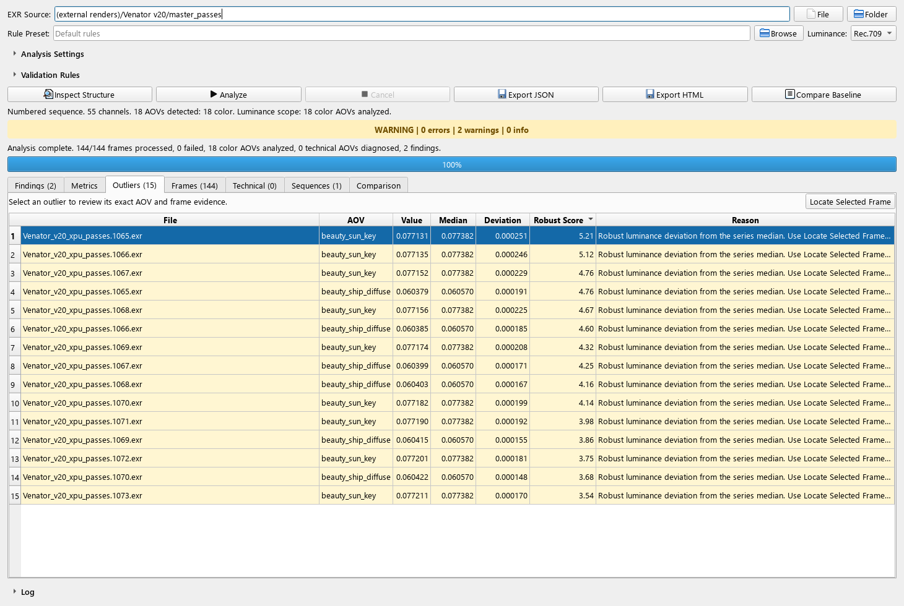

User guide and technical reference
AOVGuard documentation
AOVGuard validates OpenEXR files and render sequences. It detects read errors, NaN values, infinities, empty AOVs, unknown channels, temporal changes, and continuity problems without hiding unrecognized data.
Installation
Windows or Linux, Python 3.12, and uv are recommended. The project supports Python 3.11 and 3.12 and requires OpenEXR 3.3 or newer.
cd "C:\path\AOVGuard"
python -m pip install uv
uv python install 3.12
uv sync --locked --python 3.12After synchronizing the environment:
uv run --extra gui aovguard-ui
uv run aovguard --helpThe base CLI requires NumPy and OpenEXR only, with no Qt or OpenCV dependency. The optional gui extra installs PySide6; use uv sync --locked --extra dev for the complete development/test environment.
python -m pip install ./dist/rc-wheel/aovguard-1.4.0rc1-py3-none-any.whl
python -m pip install "./dist/rc-wheel/aovguard-1.4.0rc1-py3-none-any.whl[gui]"examples directory remains empty except for its version-control placeholder.Using the graphical interface
- Select the source. Use File for one EXR or Folder for a sequence.
- Load an optional preset. Presets can be TOML or JSON. Without one, the default rules are applied.
- Choose the luminance model. Select Rec.709, Rec.601, ACEScg/AP1, or custom weights to match the scene-linear source primaries. Selecting weights does not apply a color transform.
- Set the source mode. Auto infers the type; Sequence requires numbered frames; Comparison treats EXRs as independent samples.
- Review discovery settings. Adjust the pattern, recursive search, depth, multiple sequences, frame limit, and expected range.
- Development memory budget. Memory budget (MiB) uses 0 / Unlimited for disabled, which is the fresh/older-settings default. Invalid saved values restore 1024 MiB with a visible warning.
- Development execution controls. Keep Isolate analysis process enabled (the default). Frame timeout (s) uses 0 / No timeout, or a positive frame service deadline. Disabling isolation prevents timeout use and leaves native cancellation cooperative.
- Use Inspect Structure. Check resolution, parts, channels, AOVs, and categories before reading pixels.
- Run Analyze. Progress shows processed frames, and read failures are retained as findings.
- Review and export. Filter findings, navigate to outliers, and generate JSON or HTML.
Source interpretation
Resolves a single file, numbered sequence, or comparison set from the discovered names.
Enables gap, duplicate, and padding validation. It does not allow numbered frames to be mixed with loose EXRs.
Compares deliberately independent samples and avoids treating naming differences as sequence gaps.
In isolated mode, Cancel stops and reaps the active child. Closing waits for child/thread cleanup while the event loop remains active. One process is reused sequentially; a timeout or crash fails its exact frame and allows a replacement for the next. Invalid stored execution modes restore isolation; invalid timeouts select 30 seconds with visible guidance.
Sequences and expected ranges
The sequence checker groups names by the final numeric block before .exr. For example, shot.0001.exr and shot.0002.exr form the pattern shot.####.exr.
Frame Limit and Expected Frame Range are different
| Option | Purpose | Example |
|---|---|---|
| Frame Limit | Prevents an unexpectedly large analysis from starting. | Reject the run if more than 1,000 files are discovered. |
| Expected Frame Range | Declares which frame numbers must exist in one sequence. | With 1–800 expected and only 1–301 present, report 302–800 as missing. |
A missing frame inside the expected range is an error. Discovered frames outside that range produce a warning. Do not use this option in Comparison mode.
uv run aovguard check-sequence "C:\renders\shot" --expected-frame-range 1 800check-sequence inspects names only; it does not decode pixels. It returns exit code 1 when frames are missing or numbers fall outside the declared range.
Per-frame memory admission in the candidate
uv run aovguard analyze ./renders --max-memory-mb 4096 --json ./reports/report.json --html ./reports/report.htmlThe positive finite budget is in MiB (1,048,576 bytes); fractions are accepted. Omit the flag to disable it; CLI 0 is invalid. Consistent headers cover all flat parts and physical channels, including unknown, ignored, alpha/AUX and Cryptomatte data. Category or AOV selection does not shrink the estimate. An over-budget frame gets an exact-file memory_budget error before pixels, retains its header/breakdown and is counted as failed while other frames continue. Header failures do not fall back to unguarded reads.
Model flat-working-set-v1 counts 4 native + 4 promotion + 8 stack bytes per channel/pixel, 32 scratch bytes per pixel in the largest stored part, and 64 MiB fixed reserve, then rounds up a 1.25 safety factor. It uses data windows and worst-case promotions without claiming exact header pixel types. This is not an OS/global RSS cap; report histories, GUI objects, decoder internals and concurrent file changes remain outside a hard bound.
Interpreting results
Errors, warnings, and informational items, including the rule, AOV, channel, file, and evidence.
Aggregate color-AOV metrics and a per-frame chart with the median and robust range.
Samples ordered by robust score. The locate action takes you directly to the exact frame.
Luminance, non-finite values, and change relative to the median and previous frame.
Minimum, average, maximum, NaN, infinities, and negative counts for every technical channel.
Pattern, discovered range, present and missing frames, duplicates, and padding.
Statuses
- PASS: no active errors or warnings.
- WARNING: conditions need review but may be valid for the shot.
- FAIL: at least one error exists, such as a corrupt EXR, NaN/Inf data, or an incomplete expected range.
The chart can display luminance, the delta from the previous frame, or relative percentage change. Triangles mark robust outliers and squares mark frame errors.
Cryptomatte handling
Cryptomatte identification values are stored as floating-point numbers, but they do not represent color or brightness. AOVGuard reads metadata in the form cryptomatte/<id>/name to identify the base layer and its numbered layers.
- Cryptomatte AOVs remain visible in the inventory and technical diagnostics.
- All ID and coverage channels remain available for NaN and infinity checks.
- They do not participate in luminance, temporal-change, brightness-outlier, or generic extreme-magnitude rules.
- Large or negative ID values are not considered defects by themselves.
[aov_categories]. AOVGuard deliberately avoids assuming that every name beginning with crypto_ is Cryptomatte.AOV categories
| Category | Treatment |
|---|---|
| color | Luminance, non-black ratio, temporal series, and per-channel diagnostics. |
| scalar, vector, mask, depth | Every component is diagnosed by channel; color luminance is not applied. |
| cryptomatte | Per-channel integrity without interpreting IDs as intensity. |
| unknown | Preserved and flagged; never discarded silently. |
| ignored | An explicit user decision; remains visible and retains integrity checks. |
Rules and presets
A preset can enable rules, change severities, set parameters, and classify AOVs. Names in [aov_categories] are case-insensitive.
preset = "lighting_delivery"
[aov_categories]
custom_depth = "depth"
crypto_asset = "cryptomatte"
vendor_payload = "ignored"
[rules.nan_inf]
enabled = true
severity = "error"
supported_aov_types = ["color", "scalar", "vector", "mask", "depth", "cryptomatte", "unknown", "ignored"]
[rules.empty_aov]
enabled = true
severity = "warning"
supported_aov_types = ["color"]
[rules.extreme_values]
enabled = false
severity = "warning"
[rules.extreme_values.parameters]
max_absolute = 1000000.0Integrity rules can apply to technical channels. Artistic rules such as empty_aov and near_empty_aov are restricted to color. The interface can save an unknown-AOV classification to the preset only after explicit confirmation.
Per-AOV technical ranges
The development technical_range rule is disabled by default. It defines inclusive bounds for each project depth, mask, scalar or vector AOV. Every component is checked, with exact frame and channel evidence in Findings, JSON and HTML.
[rules.technical_range]
enabled = true
severity = "warning"
[rules.technical_range.parameters.ranges.Z]
min = 0.0
[rules.technical_range.parameters.ranges.matte]
min = 0.0
max = 1.0
tolerance = 0.000001Add these tables to a preset with nan_inf enabled and classify matte = "mask" under [aov_categories] if appropriate. Names are examples: use the actual AOVs and project units. A preset replaces the defaults; retain the other checks you need.
At least one finite min or max is required. Tolerance is absolute, not a percentage, and defaults to zero. Targets are exact and case-sensitive, with no wildcards; quote complete multipart identities such as "[part:left]::Z". A target absent from all inspections, an invalid configuration or a non-technical category produces rule_error. Also use missing_aov to require presence in every frame.
Load the preset and enable Technical ranges in the interface. The rule reuses finite extrema: it does not reread or modify pixels, or count/locate out-of-range pixels. Cryptomatte, color, unknown and ignored channels cannot receive this policy. Units are not inferred and vector lengths are not validated.
Command line
Structural inspection
uv run aovguard inspect-structure "C:\renders\shot.0001.exr"Analysis with JSON and HTML
uv run aovguard analyze "C:\renders\shot" --source-mode sequence --expected-frame-range 1 800 --rules-config config\rules.example.toml --json reports\shot.json --html reports\shot.htmlRecursive discovery
uv run aovguard analyze "C:\renders" --frame-pattern "shot.*.exr" --recursive --max-depth 2For safety, multiple numbered sequences require --allow-multiple-sequences. Use --max-frames 1000 as a size limit and --fail-on-warning for strict publishing.
Isolated execution and timeouts in the candidate
uv run aovguard analyze ./renders --frame-timeout-seconds 60 --max-memory-mb 4096 --json ./reports/report.json
uv run aovguard analyze ./renders --in-process --json ./reports/in-process.jsonCanonical CLI/GUI analysis isolates frames by default in one reusable sequential child. The optional positive finite timeout starts after its ready handshake and includes header inspection, memory admission, native decode, reductions and IPC. Startup has a separate 30-second deadline; startup/cleanup can add time. Omitting the timeout leaves frame duration unlimited, not isolation disabled. frame_timeout or worker_crash fails the exact frame, reaps the child and permits restart for the next.
--in-process opts out, cannot interrupt native I/O and rejects a simultaneous timeout before decode. The generic Python API remains opt-in through AnalysisOptions(isolate_frames=True, frame_timeout_seconds=60); an isolated custom reader needs a supported process specification. No parallel processing, cache, security sandbox or hard RSS cap is added.
Isolated API scripts must call analysis from a function under if __name__ == "__main__":. Notebook/REPL callers should use the default in-process API or run the external CLI, with no silent fallback. These controls apply to canonical analysis, not standalone header inspection or legacy commands.
Discovery, final rule evaluation and export also run in the parent outside the frame deadline. Slow folder/NFS listing and manual Inspect Structure have no hard job-wide time limit from this option.
Exit codes
0: PASS, or WARNING when strict mode was not requested.1: FAIL, read/configuration error, or WARNING with--fail-on-warning.130: Ctrl+C during canonical analysis, after child cleanup.2: invalid command syntax or incompatible in-process/timeout options.check-sequencealso returns 1 for an incomplete expected range.
Reports and baseline comparison
JSON is the canonical machine-readable report, using analysis schema 1.2. It records the version, options, effective rules, source, discovered/processed/failed frames, AOV inventory, per-frame channel metrics, each part's original name/view/windows, separate sequence series, and findings without emitting non-standard NaN/Infinity tokens.
HTML presents the same result for human review, including status, configuration, metrics, technical diagnostics, sequences, findings, and recommendations.
The development version publishes each report using a temporary file and atomic replacement. A write failure before replacement preserves the previous report. This protection is automatic for JSON, HTML, comparison JSON and legacy JSON/CSV exports.
Destinations cannot be EXRs, symbolic links, read-only files or known inputs. The CLI rejects duplicate output paths, including file aliases; the GUI also protects presets used for analyses and baselines loaded in the window. A permission or file-lock failure keeps the analysis available for another export attempt.
Publication is per file: if JSON succeeds and HTML fails, JSON stays published. Writers are not coordinated and power-loss durability or network-storage behavior are not guaranteed. Forced termination can leave a .tmp sibling; existing complete reports are not truncated during writing.
uv run aovguard compare-reports reports\baseline.json reports\candidate.json --json reports\comparison.jsonThe comparison identifies added or removed AOVs, metric changes, new findings, and resolved problems. In the GUI, analyze the candidate first and then use Compare Baseline.
Contradictory recorded luminance weights, thresholds, category overrides, source interpretation, or active rules reject comparison. Disabled rules do not affect compatibility; changing active range bounds does. A missing or non-finite metric is unavailable, not unchanged. Analysis schemas 1.0, 1.1 and 1.2 are readable, with a warning when historical compatibility cannot be fully established. Finding comparison includes affected source-relative files and metric evidence; the comparison output has its own schema 1.0.
Every supported physical channel receives integrity checks, including alpha and auxiliary components; UINT ID arrays preserve exact integers. Root RGB alongside a named beauty layer appears as beauty [root]. Numbered sequence deltas require adjacent frame numbers and do not cross missing or failed frames.
Flat multipart parts remain separate: unique names produce identities such as [part:left]::beauty, with percent escaping for delimiter characters. Unnamed or duplicate names use part-index fallback. Names, views and data/display windows remain available for each part. Any deep part or incomplete decode rejects the whole frame; resolution and structure baselines remain separate per numbered sequence.
uv run aovguard analyze ./renders --luminance-model acescg --json ./reports/acescg.jsonACEScg expects linear AP1 RGB and uses Y weights (0.2722287168, 0.6740817658, 0.0536895174). Custom --luminance-weights R G B overrides the named model.
Development memory fields are additive to schema 1.2: metadata.options.max_memory_mb, model/units/caveat and per-file memory_estimates. HTML shows budget and admission decision. The budget is not a semantic baseline constraint for accepted metrics, although different admitted scopes can change aggregates and findings.
Execution fields are also additive: metadata.options.isolate_frames, metadata.options.frame_timeout_seconds and per-file frame_execution (mode, status, worker PID, elapsed seconds, timeout, exit code and stage). HTML exposes the same diagnostics. Elapsed time can include startup, frame service and cleanup and is not a decode-only benchmark. Volatile PID/timing and execution policy are ignored for baseline compatibility when numeric evidence is identical; failed frames can still change findings and aggregates.
Troubleshooting
- “EXR contains no image parts”
- The file is empty, incomplete, or corrupt. AOVGuard records a read error and continues with the remaining frames; rerender or replace that EXR.
- No files are found
- Check the path and Frame Pattern. Enable recursive search when EXRs are inside subdirectories, and increase Max Depth if required.
- Several sequences are detected
- Narrow the pattern or select a more specific directory. Enable multiple sequences only when combining them is intentional.
- Cryptomatte appears as color
- Check whether the file retains its
cryptomatte/.../nameattributes. If they are absent, assigncryptomattethrough the preset. - Technical values are extremely large
- They may be encoded IDs. The table uses scientific notation; decide from the category rather than magnitude alone.
- The interface appears frozen
- Keep process isolation enabled in the development checkout. Cancel stops/reaps the active child; closing waits for child/thread cleanup without blocking the event loop. In-process mode must wait for native reads to return.
frame_timeoutorworker_crash- Review the exact file and execution stage/exit code. Check incomplete input, storage latency or a deadline that is too short; increase the deadline deliberately if appropriate. The failed frame remains recorded and later frames can restart in a replacement child.
- Fatal
WorkerCleanupError - Cleanup could not confirm that the child/receiver stopped. The job aborts, the executor is not reusable and the GUI blocks new analyses. Check the visible PID/error details and any remaining analysis process, then restart AOVGuard; do not terminate unrelated Python jobs. Bounded waits cannot guarantee OS termination of an unkillable process.
Known limitations
- Flat multipart is supported. Deep sample data remains unsupported; any deep part or partial decode invalidates the entire frame.
- Unique named-part identity is stable while multipart. A two-part file becoming single-part returns to historical unqualified keys. Unnamed/duplicate identities depend on index, so arbitrary reordering is ambiguous.
- The tool does not understand artistic intent; thresholds must be calibrated per production.
- Category inference is conservative. Studio-specific names may require a preset.
- The expected range supports exactly one numbered sequence and does not replace farm-management software.
- Baseline reports compare AOVGuard evidence; they do not perform visual image comparison.
- The native API eagerly loads all part pixels. Frame references are released after measurement, but this does not demonstrate streaming or a lower measured peak RSS. Small benchmarks do not establish 4K capacity.
- Pixel statistics cover stored
dataWindowpixels; delivery resolution usesdisplayWindow. Autocrop can alter average luminance without changing the delivery canvas. - Color space is selected explicitly. Signed ACEScg values can be valid, so negative-value thresholds need production context.
- The memory guard is an admission estimate, not a global/hard cap. A source can change between header and eager pixel opens. Isolation can stop the child but is not a security sandbox or allocator cap; in-process native I/O remains non-interruptible. Caching, parallel frame processing, automatic renderer-specific semantics and table virtualization remain future work.
- The frame deadline covers service after readiness, not startup/cleanup or total job time. Startup has a separate 30-second deadline; frame duration is unlimited by default.
- Unconfirmed child/receiver cleanup is fatal and stops work instead of silently replacing the worker. An OS-level unkillable process is outside a guaranteed termination bound.
Candidate verification
The local candidate suite has 1036 passed, 3 skipped and 96.34% combined application statement/branch coverage. Ruff and mypy pass. Type checks target Windows and Linux; that is not an executed Linux suite. Remote results for each revision are available in GitHub Actions.
Existing render sequences
| Delivery | Frames read | Channels | Outcome |
|---|---|---|---|
| Maya/Arnold | 301/301 | 56; 7 color AOVs, 8 Cryptomatte and N/Z | WARNING: empty volume |
| Venator masters | 144/144 | 55; 18 color AOVs | WARNING: empty beauty_bridge_solar and localized beauty_ship_emission |
| Venator denoised beauty | 144/144 | 4 RGBA | PASS, no findings under the selected rules |
No NaN or infinity was found. Venator masters retain 15 atypical AOV-frame samples across 9 unique frames; this alone does not prove a render defect. CLI/GUI reports match and acceptance covers navigation, baseline comparison, cancellation, restart, exports and cleanup. Warnings remain visible until the scene is interpreted.


Repeat a verification
uv run --locked python -m scripts.verify_real_sequence RENDER_FOLDER --frame-pattern "Venator_v20_xpu_passes.*.exr" --expected-frame-range 1065 1208 --luminance-model rec709 --expect config/verification/venator-master.json --output-directory dist/verification-venator-new --gui --check-cancellationReplace RENDER_FOLDER with your external directory and use a new destination. Profiles in config/verification describe expected outcomes, not rule presets that suppress warnings. Default preservation compares names, sizes and timestamps; --hash-source adds SHA-256 before and after. Full reports and private paths stay outside the public repository. The verifier is supplied with the checkout or source ZIP.
Historical checkpoints
Local packaging verification on 2026-10-12: 848 passed, 2 skipped on Windows/Python 3.12.12, 96.21% combined application statement/branch coverage in 51.38 s; Python 3.11.14 had 848 passed, 2 skipped, with 96.17% in 47.11 s. Skips concern POSIX-only raw IPC fragments and unprivileged Windows symlinks. Both suites used locked NumPy 2.4.6 / OpenEXR 3.4.12; Ruff passed and mypy checked 48 application modules plus the packager.
The 81 new packaging cases cover reproducibility, excluded data, manifests, altered/incomplete archives, unsafe paths and publication failures. The packager separately reached 98.79% coverage. The preceding export milestone had 767 passing tests and 96.21% on both Python versions; its 50 added cases cover interrupted writes, input aliases, duplicate destinations and GUI retries. Report protection is per file, not a transaction across multiple reports.
The earlier technical-range milestone had 717 passing tests (96.01% on Python 3.12; 96.05% on 3.11). Its 49 added cases cover bounds, tolerance, technical components, invalid policies, Cryptomatte protection, frame/part evidence, baselines and CLI/GUI integration. An existing Full-HD EXR passed an isolated nan_inf check and a Z range of 0 to 10000, retaining its size and modification time. This is a test policy, not a certification of the entire sequence.
A historical headless-wheel console-spawn smoke passed real EXR analysis without Qt/OpenCV using NumPy 2.5.4 / OpenEXR 3.5.2, without changing the lock. GUI checks covered normal/in-process modes and an injected fatal-cleanup state; one existing Full-HD render was checked read-only normally and with a 0.01-second frame deadline. This is local correctness/recovery evidence, not production 4K/NFS capacity proof. Stable 1.3.0 package hashes remain unchanged.
uv sync --locked --extra dev
uv run --locked --extra dev pytest --cov-fail-under=95
uv run --locked --extra dev ruff check src tests scripts experiments/benchmark_simulated_sequences.py experiments/benchmark_memory.py
uv run --locked --extra dev mypy src/aovguard scripts/create_release.pyPrepare a development package
The packager retains required test helpers, excludes EXRs, local reports, caches and common private-file patterns, and adds a manifest with each file's size and SHA-256. Review the selection and contents before sharing: these filters are not a secret scanner.
python scripts/create_release.py --list
python scripts/create_release.py --output dist/AOVGuard-development-source.zip
python scripts/create_release.py --verify dist/AOVGuard-development-source.zipOnly standard Python 3.11/3.12 is required. The ZIP is verified before publication at its destination, and existing files are never overwritten. The destination filesystem must support hard links, such as local NTFS; otherwise publication fails without a destructive fallback. The manifest checks integrity, not authenticity, and verification does not extract or execute files. Byte-for-byte reproducibility requires identical files and the same Python/zlib runtime, with no edits during packaging. This is a development snapshot, not a newly published stable release; older ZIPs without manifests are outside this verification.
Released 1.3.0 baseline verification: 434 passed, 1 skipped, 95.56% combined coverage for each Windows/Python 3.11.14 and 3.12.12 run. The skip concerns symlink-creation permissions. Ruff and configured mypy passed across 42 source files. The small 800-frame temporary EXR case had missing frame 17 and corrupt frame 401: 799 discovered, 798 processed; this is recovery evidence, not a production 4K capacity claim. Historical checkpoints remain 368/95.41% and 282/95.37% at 530ed76. No completed Linux or remote CI run is implied.
uv run python experiments/benchmark_memory.py "D:/renders/shot" --max-frames 800This read-only command measures native process peak RSS in an isolated child using existing EXRs. It generates no images or reports; oversized sources are refused rather than sampled. The CI gate is 95% combined coverage and includes lint/types, wheel building and CLI-only installation. Tests use temporary fixtures, and examples retains only .gitkeep.
The preceding memory-admission milestone had 523 passed, 1 skipped, 95.81% combined coverage in each Windows/Python 3.11.14 and 3.12.12 run; configured mypy covered 43 source modules. These totals and measurements predate the isolated execution update. On one existing 1920 × 1080, 56-channel, 17-AOV render, the estimate was 2373.9453125 MiB: a 4096 MiB budget admitted it with 935.59375 MiB peak RSS, whereas 1024 MiB rejected it before pixels with 39.01171875 MiB peak and no import-baseline growth. These single measurements do not validate 4K or NFS capacity.
uv run python experiments/benchmark_memory.py "D:/renders/approved/frame.0001.exr" --max-memory-mb 4096